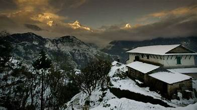
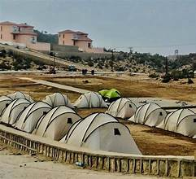

Gorakh Hill Station
The “Murree of Sindh” – a breathtaking hill station located in the Kirthar Mountains.
The “Murree of Sindh” – a breathtaking hill station located in the Kirthar Mountains.
Gorakh Hill Station is one of the most famous tourist destinations in Sindh, Pakistan. Situated at an altitude of about 5,689 feet (1,734 meters) in the Kirthar Mountain Range, it offers a cooler climate compared to the surrounding plains, which is why it is often called the “Murree of Sindh.”
The hill station is located approximately 94 kilometers northwest of Dadu city and attracts nature lovers, adventurers, and tourists seeking scenic views and pleasant weather.
Gorakh Hill Station is one of the few places in Sindh where temperatures drop significantly, even experiencing snowfall in winter. The summer months remain pleasant compared to the hot plains, making it an attractive getaway.
The hill station offers opportunities for camping, trekking, stargazing, and exploring natural landscapes. Tourists also enjoy jeep rides through the rugged terrain leading up to the station.
